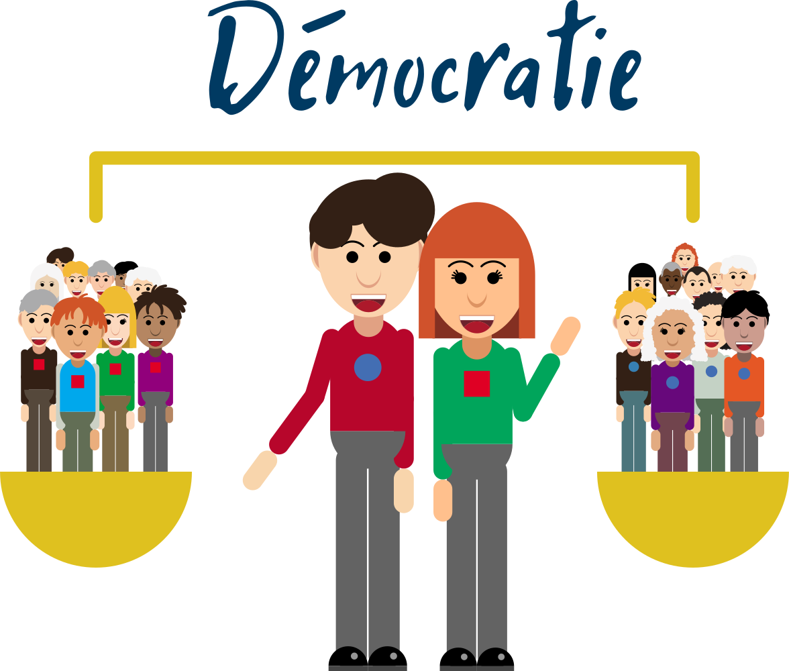
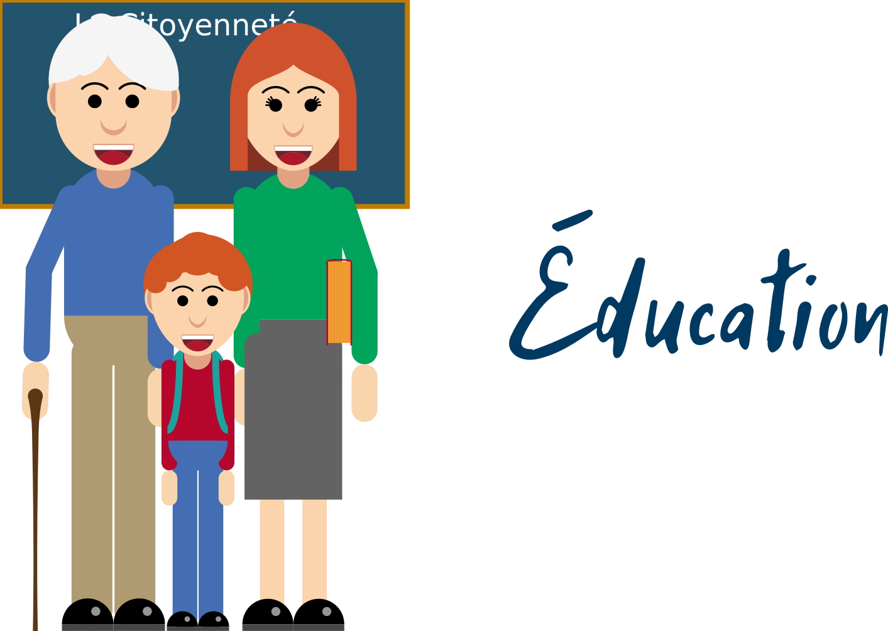
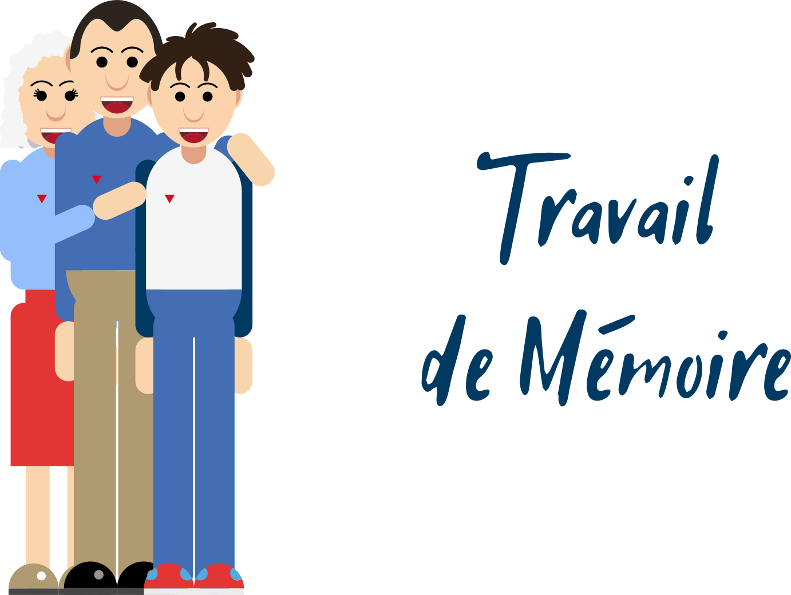
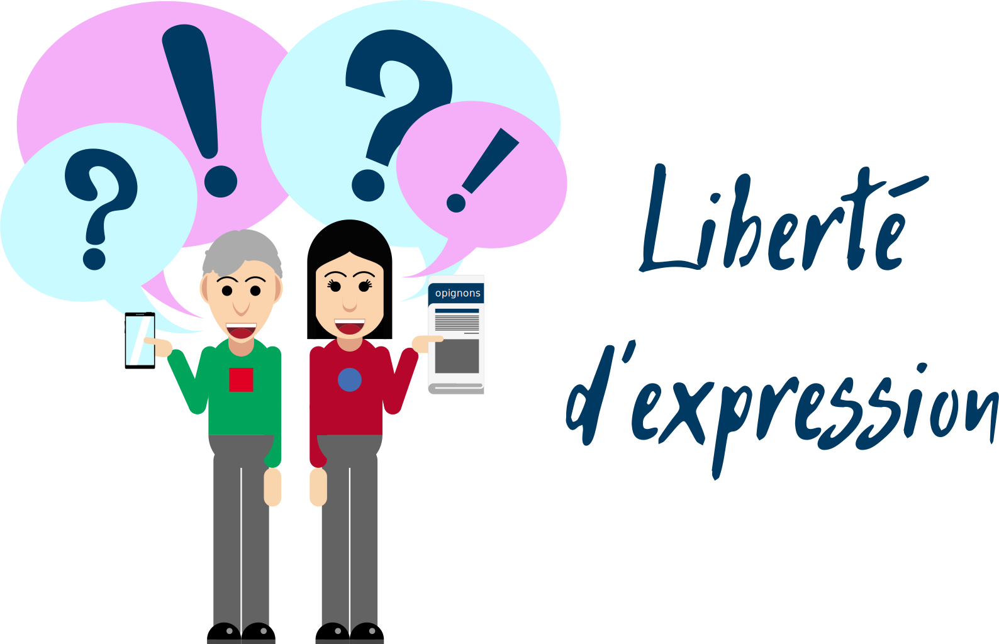
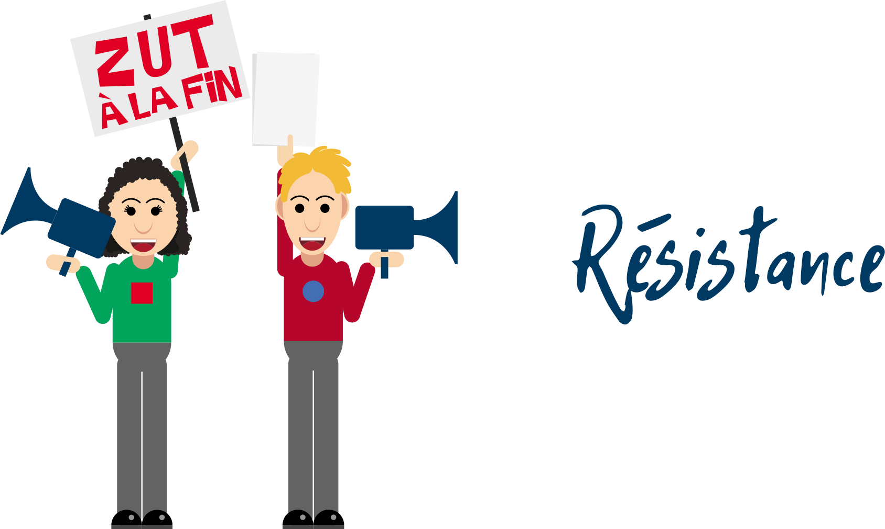

Le parcours
Départ/Arrivée
Administration communale, Rue des Ecoles 4, 4684 Haccourt
Boucle A (en rouge)
+/- 2.5km (contient les 11 Points Of Interest ou POI)
Boucle A + B (en bleu)
+/- 4.5km (soit 2km de parcours nature supplémentaire pour les marcheurs et marcheuses entre les POI 10 et 11)
La carte
Les questions
1. Administration communale
Rue des Ecoles 4

L’administration communale, c’est l’endroit où travaillent ensemble vos élu-e-s et vos agents communaux. En Belgique, le vote est-il obligatoire ?
- Oui
- Oui, mais seulement pour les hommes
- Non, il ne l’a jamais été
En Belgique, le vote est obligatoire et secret. Aux élections communales comme aux autres élections, nous élisons un nombre prédéterminé de représentant-e-s. C’est pourquoi on parle en Belgique de démocratie représentative. Les élu-e-s doivent représenter tou-te-s les citoyen-ne-s même celles et ceux qui n’ont pas voté pour leur parti politique. Si nous ne sommes pas satisfait-e-s du travail des élu-e-s, qu’ils ou elles ne respectent pas leurs promesses, nous avons en retour le droit de les interpeller.
2. Ecole
Rue des Ecoles

En Belgique, l’école est devenue obligatoire en :
- 1904, pour les enfants de 6 à 12 ans
- 1914, pour les enfants de 6 à 14 ans
- L’école a toujours été obligatoire
Depuis 1914, l’obligation scolaire s’est étendue. Pour protéger les enfants de tâches trop dangereuses ou trop lourdes pour leur jeune âge mais aussi pour permettre à tous les enfants d’avoir le même accès à l’apprentissage, l’obligation scolaire s’est développée. Actuellement, l’enseignement scolaire est obligatoire de 6 à 18ans. Cette obligation scolaire permet d’essayer de réduire les inégalités dans un monde où tout le monde ne nait pas avec le même accès au savoir.
3. Eglise
Rue des Ecoles
Choisir et pratiquer une religion en Belgique, c’est :
- Autorisé
- Interdit
- Autorisé uniquement pour la religion catholique
La démocratie permet plus facilement l’expression de la volonté et des intérêts de tous. Elle préserve par exemple la diversité de culte, chacun peut adhérer à la religion qu’il souhaite. La démocratie, à travers les lois, constitutions, déclarations et décrets, protège les droits et libertés de chacun. En cela, elle suit la Déclaration Universelle des Droits de l’Homme, qui en 30 Articles, assurent la protection de divers droits civils et politiques dont le droit à la liberté de pensée, de conscience et de religion (Article 18). Malgré le fait que ce droit soit protégé, il existe encore des personnes qui sont discriminées en fonction de leur religion. D’où l’importance encore aujourd’hui, d’avoir conscience de ces inégalités et de lutter contre.
4. Maison du peuple
Rue des Tavernes

La Maison du peuple était un lieu de rencontre pour les ouvriers. C’est notamment dans ce genre d’endroit que furent organisées les luttes sociales, pour obtenir de meilleures conditions de travail, un meilleur accès à l’éducation, de meilleurs droits politiques, etc. Pourquoi peut-il être intéressant de se plonger dans l’Histoire ?
- Parce que l’histoire se répète toujours à l’identique
- Parce qu’en connaissant le passé, on comprend mieux le présent
- Parce que les dates de fin de guerre sont celles qui sont les plus chanceuses à la loterie
L’Histoire, locale ou internationale, permet en effet de mieux comprendre comment certaines situations se créent et comment certains droits et libertés ont été acquis. De la même façon, l’Histoire permet aussi de mieux comprendre comment fonctionne l’être humain dans telles ou telles situations, de comprendre pourquoi certaines personnes sont plus attachés à certains symboles, traditions, histoires que d’autres.
5. Café l’Union
Rue Lemaire

La liberté d’opinion et d’expression s’exerce partout et tout le temps. Existe-t-il cependant des limites quant à ce que l’on peut dire ou ne pas dire ?
- Non, Il n’y a pas de limites légales à la liberté d’expression
- Oui, Il est interdit par la loi belge de tenir des propos incitant à la haine
- Oui, Il est interdit par la loi de parler de sa vie privée dans l’espace public
La loi belge interdit les propos racistes, xénophobes (qui sont hostile à ce qui est étranger), discriminatoires (qui distinguent quelqu’un à son désavantage), négationnistes (qui nient l’existence de la Shoah, l’extermination des Juifs durant la Seconde Guerre mondiale), diffamatoires (qui nuisent à quelqu’un sans justification) ou injurieux. Ainsi, la liberté d’expression ne rentre pas en conflit avec d’autres droits : discriminer quelqu’un, par exemple, va à l’encontre du fait que tous les êtres humains naissent égaux en dignité et en droits.
6. La Macrale
Avenue Reine Elisabeth

Vous voyez une personne avec un balai, un nez crochu et un chapeau pointu. La plupart du temps, vous penserez :
- C’est une sorcière !
- C’est une princesse !
- C’est une grenouille !
Nous partageons tous des stéréotypes, c’est-à-dire que notre cerveau fait des catégories, pour retrouver plus vite l’information qu’il recherche. Par exemple : un balai et un chapeau pointu évoque une sorcière. Cela peut devenir dangereux quand on pense que toute une catégorie de personnes correspond au même trait et qu’on applique un jugement négatif à toutes ces personnes sans les connaître : par exemple, penser que toutes les filles sont nulles en math. C’est alors un préjugé, qui peut mener à une discrimination, autrement dit à un comportement qui peut être injuste envers ce groupe si ce préjugé est négatif : par exemple, on incite les filles à prendre d’autres options que les mathématiques. Faire attention à ce que l’on pense d’un groupe de personnes pour voir si on ne généralise pas trop, c’est un exercice qui permet de résister aux comportements injustes et discriminants.
7. Pont
Allée verte (Ravel)
A travers les médias de plus en plus de problèmes d’actualité sont abordés, parfois en présentant des opinions ou des faits de façons très différentes. Pour s’y retrouver dans cette masse d’informations, il est souvent intéressant de faire fonctionner notre esprit critique pour déceler le vrai du faux. Comment peut-on apprendre ce genre d’exercice ?
- Uniquement grâce à l’école
- De diverses façons (école, livres, rencontres avec d’autres personnes, Internet, etc.)
- Uniquement grâce au débat
L’esprit critique peut s’apprendre et s’exercer partout et en toutes occasions, aux travers des rencontres, des informations reçues et des expériences vécues. L’esprit critique est comme un muscle, il faut l’entraîner pour pouvoir de plus en plus facilement se forger sa propre opinion sur des bases solides. C’est pouvoir comprendre les informations reçues, se créer son propre avis et défendre ses arguments sur le sujet. Une forme d’auto-défense aussi précieuse que le karaté !
8. Quai
Quai des Cimenteries
Durant la seconde guerre mondiale, résister signifiait entre autres transmettre des informations, se battre, commettre des sabotages. En temps de paix et aujourd’hui, comment est-il possible de résister ?
- Il n’y a plus de raison de résiste aujourd’hui
- Il faut aller vivre ailleurs et oublier ce qui nous dérange
- On peut, entre autres, dire qu’on n’est pas d’accord, l’écrire, le chanter, le dessiner, manifester ou voter.
Résister, c’est s’opposer. Il y a autant de manière de résister qu’il y a d’individus indignés et décidés à agir. A toutes les époques, en temps de guerre comme en temps de paix, ici ou ailleurs, des personnes, connues ou anonymes se sont engagées pour défendre ce qu’elles trouvaient juste. Le premier pas et de reconnaître son désaccord et de l’exprimer. Du fait d’exprimer son désaccord au fait de lutter activement pour une amélioration de ce qu’on juge être un problème, la palette d’actions possibles est large. C’est votre imagination qui compte.
9. Boîte postale
Croisement de la Rue des 7 Bonniers
Imaginez un pays où vous ne pouvez pas communiquer librement, que ce soit par courrier, par Internet ou par téléphone. Certains livres, journaux, films ou sites Internet sont interdits par la volonté d’une autorité. Comment appelle-t-on ce phénomène ?
- La censure
- La propagande
- La non-communication
Dans certains pays comme la chine, l’usage d’Internet est restreint par la loi. Le contenu de certains sites sont bloqués et l’accès à Internet de chaque personne peut être surveillé. L’accès aux savoirs est ainsi réduit, de même que la possibilité d’exprimer son désaccord ou d’effectuer des choix différents. Le contexte non-démocratique se renforce de lui-même, la liberté d’expression et d’opinion nécessaires à la construction d’une démocratie étant limités.
10. Pierre commémorative 40-45
Square Père Pire
A la sortie de la Seconde Guerre mondiale, beaucoup de personnes ont dit « Plus jamais ça ! ». Comment pouvons-nous aujourd’hui aider à réaliser ce souhait de paix ?
- On peut s’intéresser au monde qui nous entoure et s’impliquer dans diverses actions qui nous semblent justes
- On peut s’intéresser à la politique et voter pour des personnes ayant des idéaux en accord avec le souhait de paix ou même s’engager soi-même en politique
- On peut s’indigner face aux injustices qu’on rencontre et le faire savoir
Ce n’est pas toujours facile, mais les actions d’une seule personne tout comme les actions collectives peuvent faire la différence. De nombreuses choses sont possibles si vous souhaitez changer les choses sur des sujets où vous n’êtes pas d’accord. Certains donnent leur opinion quand ils ou elles ne sont pas d’accord, certains s’engagent en politique, certains se renseignent sur les problèmes de société, d’autres signent des pétitions, d’autres encore manifestent, etc. C’est à chacun de trouver la méthode qui lui convient. Ces méthodes peuvent d’ailleurs être complémentaires et aider à atteindre plus vite le but recherché. Il n’y a pas qu’une seule façon d’agir, vous êtes libre d’agir comme il vous plaira : les acteurs de l’histoire, c’est vous.
11. Administration communale
Rue des Ecoles 4
« Mon premier est une année au masculin,
Mon second s’obtient en perdant un jeu ou un pari,
Mon dernier dit le contraire de la vérité,
Mon tout vous permettra de changer les choses »
- Engagement
Vous avez complété la balade citoyenne d’Haccourt, bravo pour votre participation citoyens et citoyennes !